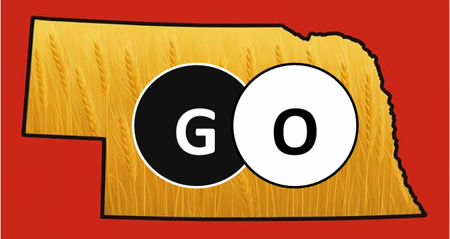

We promote GO, not only because it’s fun to play, but because it creates better students and better citizens, leading to better communities.
Bill Gates - “When I was young… I wanted to be the world’s
best Go player”
–Bill Gates Speaks: Insights from the World’s Most Successful
Entrepreneur, p. 227.
(The Rules of GO are at the bottom of this page)
GO is an ancient, easy-to-learn, and fun to play strategy
game. It is played by placing black and white stones on a
grid.
Objective - The goal is to surround more territory than
your opponent. You can also score points by capturing your opponent’s
stones.
Simple rules - The rules are very simple and can be
learned in a few minutes, even by four-year-olds.
Handicapping system - It has a simple handicapping
system that allows children to play with adults and beginners to play
with experts, without changing the “flavor” or “feel” of the game.
This guarantees a close exciting game in which both players have
an equal chance of winning.
Because GO benefits both the individual and the community, the mission of the Nebraska GO Advisory Council is to promote the fun, fascinating, and educationally-beneficial game of GO in and near the state of Nebraska. Hopefully, our existence and, moreover, our success will be an inspiration to GO promoters beyond Nebraska.
Research done in both the USA and South Korea has proven that playing GO significantly IMPROVES:
Who wouldn’t want to live in a community with students and adults with the above improved abilities?
NOTE: Baduk is the Korean name for GO.
“My faculty and I firmly believe in the value of engaging students through hands-on, minds-on learning, and the game of GO falls perfectly in the realm of stimulating learning experience.” – Joy Zhao, Director of Academics, YingHua International School, Princeton, NJ.
To promote GO in Nebraska and the surrounding areas by:
Cooperation – To promote our vision, we look forward to working with other passionate, like-minded, individuals and organizations, including, but not limited to, the American Go Association (USGO.org) and the American Go Foundation (AGFGO.org). We are not interested in duplicating other organizations’ efforts, but in complementing and enhancing their efforts, in order to promote GO in and around Nebraska.
FREE Go starter sets are available from the American Go Foundation (AGFGO.org/start-a-club) for any K-12 school, library, YMCA, or community center. Also, ask about their home-schooling program.
FREE GO Presentations – We are available to do FREE one-hour GO presentations for your group, which includes:
The presentation, itself, takes about 20 minutes, but can be shortened for younger audiences. Teaching GO takes less than five minutes. Participants should be allowed at least 20 minutes to play a game or two. There is no charge for this service. However, if you would like to make a small donation to cover milage, that would be greatly appreciated, but is completely voluntary.
Nebraska GO Advisory Council members
Please note that none of the council members make any money from GO. Also, please note that we are always looking for new NGAC members to help promote GO in and around Nebraska (even if you don’t know how to play GO). Ask for an application form.
For more info, contact: Jim Story, Council Chair, jm9st96@gmail.com, (402) 672-9075.
Omaha and Bellevue GO Club meeting times and places: Meetup
Omaha & Bellevue GO Clubs – Jim Story, (402) 672-9075, jm9st96@gmail.com
Lincoln GO Club – Levi Hagen, (402) 669-9844, or Isaac Remboldt, (785) 424-3066, isaacremboldt@gmail.com.
For other GO clubs and GO players in the USA, check out:
by Jim Story (imho)
Both GO and Chess are great mentally-challenging games. Obviously, each games’ enthusiasts will have their own strong opinions about which game is better and why. I, personally, have played both games seriously for decades. For example, I’ve played in both GO and Chess tournaments, I have been the organizer of the Omaha GO Club since 2011, and, in 1994, I was the President of the Memphis, TN, Chess Club. Both are good games. However, if you must choose between starting a GO club OR a starting a Chess club, might I suggest a GO club, for the following reasons:
GO is FREE – you can get FREE GO starter sets for your K-12 school, library, YMCA, or community center GO clubs from the AMERICAN GO FOUNDATION (www.AGFGO.org).
GO uses more of the brain – fMRI (functional Magnetic Resonance Imaging) studies show that GO uses more of the brain than Chess. It’s more of a whole-brain workout.
Handicapping system – Unlike Chess, GO has a simple handicapping system that allows kids to play with adults and beginners to play with experts, without changing the “feel” or “flavor” of the game. This allows a close exciting game in which both players have an equal chance of winning, whatever their skill levels.
GO is quicker and easier to learn - The rules of GO are simpler than the rules of Chess, so it’s quicker and easier to learn. This is especially important for younger children. For example, in GO, there is only one “piece”, the stone. Stones are placed on the board one at a time and, once placed, are not moved.
By comparison, in Chess, there are five pieces: king, queen, bishop, knight, and rook, plus the pawns. All move differently. And, there are many special rules, like castling, en passant capturing, pawn promotion, etc. GO, by comparison, has only two easily-understandable special rules: You cannot make a move that results in either (1) the capture of your own stones, or (2) a move that duplicates a previous position. That’s it. Very simply rules.
Capture GO (simplified GO) – In “regular” GO, victory is determined by how much territory each player has surrounded at the end of the game, plus the number of stones each player has captured. As some beginners, especially younger children, have difficulty envisioning how much territory each player has surrounded with their stones as they are playing the game, there is a simplified version of GO called, “Capture GO” that eliminates this beginner difficulty.
In Capture GO, you only need keep track of how many stones you have captured while playing. And, the first player to a preset number of stones captured, 30 for example, wins. This is not that different from “regular” GO, because the player who has surrounded more territory will be the first to capture 30 stones. So, both “regular” GO and Capture GO produce the same winner, the same result. See the rules for both regular GO and Capture GO below.
GO is ultimately more mentally challenging – Even as early as the 1990’s, computers could be programmed, using heuristics (“rules of thumb”) in combination with brute-force computing, to beat the best Chess player in the world. However, not until 2016, with the invention of the artificial intelligence software known as AlphaGo, were computers able to defeat the world GO champion. So, GO presents more of mental challenge to humans than does Chess.
Eventual greater complexity – GO can be played on boards of different sizes. The larger the board, the longer the game takes and the more complex is the interaction between the different battles on the board. This is what makes it both exciting and challenging. A simplified analogy would be, “If Chess is a battle, then GO is a war with multiple battles that interact with each other”. On the large GO board (a grid of 19 x 19, which is five times the size of a Chess board), GO strategy is estimated to be four times as complex as Chess. You can play a quick game of GO on a small board (e.g., on a 9 x 9) in ten minutes. But as GO players advance in skill, they like to play on larger boards, which makes for a more complex and, therefore, more challenging, and exciting game.
In conclusion, hopefully, you can start both GO and Chess clubs at your school, library, community center, or YMCA. However, if you can only start one, I strongly suggest starting a GO club for the reasons listed above. Lastly, if you can’t start a GO club, then, by all means, please start a Chess club.
Sincerely, Jim
The written rules are below. You can also watch a YouTube video to learn the rules. For free, kid-safe, beginner GO videos, go to: @WorldGoChannel – start with the playlist “Lessons in Logical Sequence”. The first video teaches the rules of GO (five minutes). The second video is a sample game with explanations (20 minutes). There are over 100 five-minute GO videos on this YouTube channel designed specifically for beginners.
The Rules of “CAPTURE GO”
As stated above, regular GO counts territory and captures to determine the winner at the END of the game. In CAPTURE GO, however, the winner is determined DURING the game. All of the “regular” GO rules apply with the following exceptions:
Because playing first is a huge advantage, White receives a compensation (komi) of five captured stones at the beginning of the game. These are placed in White’s “prison pile”, which can be the lid of the GO bowls or just placed on White’s side of the board.
The winner is determined during the game by whichever player captures 30 stones first (on a 9x9 board). It is strongly suggested that beginners play many games on a 9x9 before progressing to larger boards.
Players MUST place a stone on the board, when it is their turn. This last rule leads to players either filling in their own territory, or placing stones into their opponent’s territory where they can be captured. Consequently, whoever has surrounded the most territory will also win the game in both “regular” GO and Capture GO.
Starting position for beginners – When players first starting playing GO, they should start on a 9x9 board by placing stones as shown in the following diagram with Black to move first. Also, they should play Capture GO and, initially, play until a player has captured just ONE stone. By starting in the following position and only playing until a player has captured just ONE stone, both players immediately start to learn how to attack and defend. Later, they can abandon this pre-determined placement of stones and start with an empty board and, as stated above, White will start with five captured stones in compensation for Black being able to move first.
Handicap stones – When playing against beginners, it is best to give them some handicap stones at the start of the game in order to even out the game and give them a fighting chance. So, in addition to starting in the above position, 1 to 4 handicap stones can be added on the 3-3 points, as shown below. Also, I like to help a beginner win the first few games. As they win more games and gain competence, handicap stones can be removed one at a time. A rule we use is: If a player wins three games in a row against the same opponent, then, they need one less handicap stone to start the game or their opponent needs one more handicap stone. In Capture GO, Black always plays first, regardless of whether they receive handicap stones or not.
The Board and Stones: Go is a game of strategy between two sides usually played on a 19x19 grid (the board). The game may also be played on smaller boards, 13x13 and 9x9 being the two most common variants. The board is initially vacant, unless a handicap is given (see Rule 4). The two sides, known as Black and White, are each provided with an adequate supply of playing tokens, known as stones, of the appropriate color.
Play: The players alternate in moving, with Black playing first. In handicap games, White moves first after Black has placed his or her handicap stones. A move consists in playing a stone of one’s color on an empty intersection (including edges and corners), or in passing. Certain moves are illegal (Rules 5 and 6), but a pass is always legal (Rule 7). Points are awarded for controlling space in a manner described below (Rule 12). The object of the game is to end with the greater total number of points.
Compensation: In an even (non-handicap) game, Black gives White a komi (compensation) of 7 ½ points for the advantage of the first move. This komi is added to White’s score at the end of the game. In handicap games, Black gives White ½ point compensation. This avoids draws.
Handicaps: The game may be played with a handicap to compensate for differences in player strengths. The weaker player takes Black, and either moves first, giving only ½ point compensation to White, as in Rule 3 (this is known as a “one stone handicap”), or places from 2 to 9 stones on the board before the first White move. If the players have agreed to use area counting to score the game (Rule 12), White receives an additional point of compensation for each Black handicap stone after the first.
Capture: A liberty of a stone is a vacant,
horizontally or vertically adjacent intersection. A single stone in the
middle of an empty board has four liberties: the vacant intersections
above, below, left and right of the stone. The intersections diagonal to
the stone are not adjacent and are not counted as liberties of the
stone. A single stone on a side intersection has a maximum of three
liberties; a single stone in the corner has a maximum of two
liberties.
Stones of the same color are said to be connected if they are adjacent
along horizontal or vertical lines on the board (each occupies a liberty
of the other). Two stones are part of the same string if they are linked
by a chain of connected stones of the same color. The liberties of a
string of stones are the liberties of all the individual stones in that
string.
After a player moves, any stone or string of stones belonging to the
opponent which is completely surrounded by the player’s own stones,
leaving no liberties, is captured, and removed from the board. Such
stones become prisoners of the capturing player. It is illegal for a
player to move so as to create a string of his or her own stones which
is completely surrounded (without liberties) after any surrounded
opposing stones are captured.
Repeated Board Position (Ko): It is illegal to play in such a way as to exactly recreate a previous full board position from the game, with the same player to move. The most typical example is a situation where the players can each alternately capture and recapture a single stone. This is known as ko. (“Ko” is the Japanese Buddhist word for eternity.) After the first capture, the player moving next may not recapture immediately, as this would repeat the board position; instead, that player must play elsewhere on the board (or pass).
Passing: On his or her turn, a player may pass by handing the opponent a stone, referred to as a pass stone, rather than playing a stone on the board.
Illegal Moves: An illegal move is one violating the rules. If a player makes an illegal move, it shall be taken back, treated as a pass, and a pass stone exchanged.
Ending the Game: Two consecutive passes normally signal the end of the game. After two passes, the players must attempt to agree on the status of all groups of stones remaining on the board. Any stones which the players agree could not escape capture if the game continued, but which have not yet been captured and removed, are termed dead stones. If the players agree on the status of all such groups, they are removed from the board as prisoners of the player who could capture, and the game is scored as in Rule 12. If there is a disagreement over the status of some group or groups, play is resumed as specified in Rule 10.
Disputes: If the players disagree about the status of a group of stones left on the board after both have passed, play is resumed, with the opponent of the last player to pass having the move. The game is over when the players agree on the status of all groups on the board, or, failing such agreement, if both players pass twice in succession. In this case any stones remaining on the board are deemed alive.
The Last Move: White must make the last move–if necessary, an additional pass, with a stone passed to the opponent as usual. The total number of stones played or passed by the two players during the entire game must be equal.
Counting: There are two methods for counting the score at the end of the game. One is based on territory, the other on area. Although players’ scores may differ under the two methods, the difference in their scores, and the game result, will be the same. Territory: Those empty points on the board which are entirely surrounded by live stones of a single color are considered the territory of the player of that color. An empty point is surrounded by stones of a single color if one can’t reach any stone of the opposing color from that point by moving only to adjacent empty points. There are rare situations (Japanese seki) in which empty points are left at the end of the game which are not entirely surrounded by stones of a single color, and which neither player dares to fill. Area: All live stones of a player’s color left on the board together with any points of territory surrounded by [those stones] constitute that player’s area. Neutral Points: Any empty points left on the board at the end of the game which are not completely surrounded by either player’s stones are known as neutral points, and are not counted toward either player’s territory or area.
Counting by Territory: When counting by territory, players add up their total territory less any prisoners held by the opponent (including dead stones removed at the end of the game). The player with the greater total (after adjusting for any compensation offered according to Rule 3) is the winner.
(It is customary for the players to fill in their opponent’s territory with their prisoners, and to then rearrange their territories to facilitate counting. These are merely mechanical conventions to simplify counting.)
Counting by Area: When counting by area, the players add up their total area. Prisoners are ignored. The player with the greater total area (after adjusting for any compensation offered according to Rules 3 and 4) is the winner.
GO, written in different East Asian languages and scripts where GO is very popular:
Problems with / additions for this website? Open a GitHub issue.